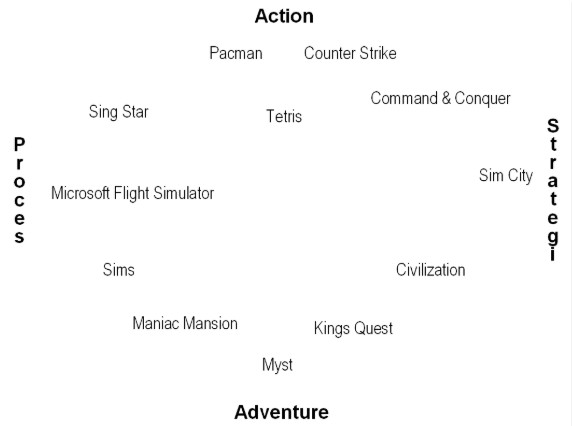

Kampagnespil/Reklamespil:
Det kan fx være spil for et firma, for at promovere/sælge et produkt, eller gøre folk opmærksomme på et bestemt emne. Det kunne f.eks være klimaet.
Gameplay:
Gameplay handler om, hvordan man spiller et videospil. Det inkluderer reglerne og de handlinger, man kan lave i spillet, samt hvad man skal gøre for at vinde eller komme videre. Det er altså det, der gør spillet sjovt og spændende.
Flow:
Flow betyder, at der er en balance mellem spillets udfordringer og spillernes evner. Hvis udfordringen er for svær i forhold til spillerens evner, kan det være frustrerende, og hvis det er for nemt, kan det blive kedeligt.
Spillertyper (målgrupper): Der findes 4 spillertyper ifølge Richard Bartle fra University of Essex
Richard Bartle fra University of Essex inddeler spillere i fire typer:
Stræbere er spillere, der fokuserer på at opnå resultater og sætte rekorder, som for eksempel at få den højeste score. De elsker at vise deres præstationer frem og sammenligne sig med andre spillere. Det er vigtigt for dem at være bedre end deres modstandere og opnå anerkendelse for deres indsats.
Udforskere interesserer sig for at udforske spillets verden og historien bag det. De kan lide at prøve alle baner, også de skjulte og ekstra indhold, der ikke nødvendigvis er nødvendigt for at gennemføre spillet. For dem er det vigtigt, at spillets verden er troværdig og fyldt med spændende detaljer og valgfrie aktiviteter.
Dræbere har fokus på destruktion og magt, ofte ved at ødelægge objekter eller modstandere i spillet. De nyder at udforske den mere dystre og moralsk tvivlsomme side af spillet. Det er værd at bemærke, at spil med meget fokus på drab kan være frastødende for andre spillertyper, især sociale, medmindre de har en humoristisk tone eller et klart budskab, som for eksempel i spillet "September 12th", der viser de negative konsekvenser af vold.
Sociale spillere lægger vægt på interaktion med andre. De vil gerne udtrykke sig og finde fællesskab med andre spillere, for eksempel gennem likes på sociale medier som Facebook. For dem er det vigtigt at kunne forbinde spiloplevelsen med deres sociale liv og netværk.
Genre:
Der findes en del genrer i gaming verdenen, som action, proces, strategi og adventure. I billedet er der markeret hvor tilfældige populære spil ligger ude i denne her skala.
